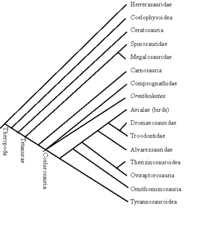
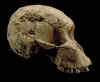

Antwort an Casey Luskin
von Nic Tamzek et al.[Zuletzt aktualisiert: 14. März 2002]

Andere Links:
|
Einführung
Die erste Version des Essays von Nick Tamzek mit dem Titel "Icon of Obfuscation" war ein recht langer Flyer, der dazu bestimmt war, bei einem Vortrag von Jonathan Wells an der UCSD am 29. Januar 2002 verteilt zu werden. Der Text dieses Flyers wurde kurz darauf ins Internet gestellt, und mehrere Versionen von Ergänzungen und Änderungen wurden nacheinander veröffentlicht, bis der Essay am 25. Februar 2002 auf talkorigins.org veröffentlicht wurde.
Kurz darauf veröffentlichte Casey Luskin vom UCSD IDEA-Club, einer der Organisatoren für Dr. Wells' Vortrag am UCSD, eine Antwort auf den ursprünglichen Flyer (den er hier hostet) mit dem Titel "Icons Still Standing: Jonathan Wells Comes Up Clean, Despite Harsh Criticism". Der gleiche Aufsatz wurde bisher auch auf der Website des San Diego IDEA-Zentrums und auf der ID-Website Access Research Network (ARN) veröffentlicht.
Während der ursprüngliche Flyer weitaus weniger Material enthielt, das sich im Talk Origins FAQ befindet, versucht Luskins ausführliche Antwort, viele zentrale Argumente des aktuellen FAQ zu adressieren, und ist bisher die einzige bekannte Verteidigung von Wells. Daher ist eine Antwort auf Luskin sinnvoll. Dennoch wird Dr. Wells dringend empfohlen, selbst zu antworten.
Diese Antwort wurde mit einer etwas neuartigen Technik zusammengestellt, bei der zahlreiche Autoren auf bestimmte Passagen des Essays von Luskin eingehen. Ein Grund dafür ist, dass eine Version davon bis zum 11. März veröffentlicht werden soll, an dem Wells und andere in Ohio sprechen. Luskin hat eine so lange Liste kreationistischer Behauptungen aufgestellt, dass eine Person diese nicht in kurzer Zeit alle auflösen kann, auch wenn sie nicht neu sind. Dies mag das Lesen etwas zerstückelt wirken lassen, aber es ermöglicht verschiedenen Personen, in Bereichen relevanter Kenntnisse beizutragen.
Um Klarheit zu bewahren, werden Zitate von Luskin in grauen Kästen wie diesem erscheinen. Alle Zitate wurden direkt aus der Version von Luskins Essay übernommen, die am 3. März 2002 vom Web gespeichert wurde. Daher werden einige Tippfehler im Original unverändert belassen, ohne [sic] usw. Die Version von Luskins Verteidigung von Wells, die auf der ARN- und der IDEA-Website veröffentlicht wird, ändert sich ständig, da Personen Fehler aufzeigen; daher bezieht sich diese Antwort notwendigerweise auf die Version vom 3. März. Ferner sei angemerkt, dass dieses Dokument ein laufendes Werk ist. Ein Teil dessen, was Luskin geschrieben hat, wird in zukünftigen Versionen dieses Dokuments behandelt.
Miller-Urey-Experiment
Abelson fährt fort zu sagen, dass es „keinen Beweis für ... aber viel dagegen" für eine Ammoniak-Methan- Atmosphäre gibt, und bemerkt, dass „[e]ine Menge an Ammoniak, die dem gegenwärtigen atmosphärischen Stickstoff entspricht, [würde durch ultraviolette Strahlung] in ~30.000 Jahren zerstört werden."2 Er und Lasaga et al. stellten fest, dass Methangas in alten sedimentären Gesteinen ein Anzeichen für organisches Kohlenstoff hinterlassen hätte, vielleicht sogar aufgrund einer 1 bis 10 m dicken „primordialen Ölschicht"15 (schließlich produzierten Miller-Urey-Experimente weit mehr Teer als irgendwas anderes, und wenn viele präbiotische Substanzen produziert wurden, hätte der Teer die frühe Erde bedecken sollen), wofür es keine geologische Beweise gibt. Schopf vermerkt, dass der Swaziland-Supergroup (~3,2 Ga) anorganischen Kohlenstoff enthält, „was darauf hindeutet, dass Kohlendioxid und nicht Methan die dominante Form des atmosphärischen Kohlenstoffs zu diesem Zeitpunkt gewesen sein könnte"16. Dies stellt die Bedeutung von untermeerischen hydrothermalen Ventilen als Beitrag zur Methanproduktion in Frage, was Tamzek sagt, Wells habe „falsch ausgeschlossen".
Da dies etwa 300 Millionen Jahre nach den ersten bekannten bakteriellen Fossilien liegt und weit nach dem Zeitrahmen des Ursprungs des Lebens (4,2–3,8 Mrd. Jahre), ist das nicht überraschend. Darüber hinaus ist Methan in Kastings Modell eine untergeordnete (ca. 20 ppm) und keine dominante Form in der Atmosphäre, sodass dies für das hydrothermale Vent-Modell doppelt irrelevant ist.
-- Ian Musgrave
Darwins Baum des Lebens
Darwins Uhr tickt
Tamzek stellt fest, dass die molekulare Uhr-Hypothese stark umstritten ist, was besonders dann zum Vorschein kommt, wenn die molekulare Uhr sich deutlich vom Fossilbericht unterscheidet (insbesondere was Säugetiere36, Vögel36 und große Tiergruppen36, 37 betrifft). Kegelschnecken79, die Tamzek angeblich als Beispiel für schnelle Evolution anführt, liefern wenig Material, um kreationistische Behauptungen gegen die natürliche Entstehung genetischer Information zu widerlegen, da sie lediglich zeigt, dass auf die mrRna der Kegelschnecken ein starker Selektionsdruck wirkte. Falls Evolution stattgefunden hat, wurden keine neuen Funktionen außer einigen wenigen verschiedenen zerstörenden Giften geschaffen – und diese Gifte haben selbst zwischen 20-50 Ma Zeit gehabt, sich in ihre recht ähnlichen Formen zu entwickeln. Das Papier gibt sogar zu, dass sein auffälligstes Beispiel für angebliche schnelle Veränderung, das es als „fokale Hypermutation" bezeichnet79, „mechanistisch unerklärt" ist, wodurch naturalistische Erklärungen an dieser Stelle machtlos sind, die angeblichen genetischen Transformationen zu erklären.
Wenn Luskin sich dazu durchringt, die Gen-Duplizierung als Beispiel dafür zu behandeln, wie die Evolution Information erhöht, hat er einige bizarre Dinge zu sagen.
Diese Arbeit, wie viele andere in der Literatur der Evolution, stützt sich größtenteils auf den Mechanismus der Gen-Duplikation für die genetische Evolution der Biochemie. Wenn man jedoch versucht, etwas zu entwickeln, hilft die Erklärung durch Gen-Duplikation dem Problem nicht viel, denn sobald man ein Gen dupliziert, hat man ein neues Stück genetischer Information, mit dem man spielen kann, aber was bringt das dir? Wenn komplexe Systeme spezifische Teile benötigen, welche Art von Beweisen gibt es dafür, dass diese duplizierten Gene die Teile sein werden, die du brauchst?
Natürlich treten Genduplikationen auch bei bereits lebenden Organismen auf, die nichts „brauchen". Wenn jedoch eine Duplikation eine zusätzliche nützliche Funktion erzeugt oder eine bestehende Funktion erweitert, wird die natürliche Selektion dazu beitragen, dass sie sich ausbreitet. Dies ist einer der häufigeren Wege, auf denen neue funktionale Information in Genome eingebaut wird, und neue komplexe Systeme sind das endgültige Ergebnis des Zusammenwirkens neuer Gene.
Luskin stützt die meisten seiner Einwände auf eine Arbeit von Lynch und Conery [1], die behauptet, dass die Rate der Genduplikation zu gering sei, doch seine Verwendung dieser Arbeit weist mehrere schwerwiegende Probleme auf:
1. Lynch und Conery haben versucht, durch die Verwendung ganzer Genome die Rate von Einzelgen-Duplikationen empirisch abzuleiten und dies unter Ausschluss von Mehrfachgen-Familien getan. Ihre Studie befasste sich nicht mit der Duplikation des gesamten Genoms, partiellen oder vollständigen chromosomalen Duplikationen oder anderen Arten von segmentalen Duplikationen. Luskin stellt die Duplikation als Mittel zur Erzeugung biologischer Neuheiten in Abrede, doch er geht nicht auf die potenteren Mechanismen zur Hinzufügung von genetischem Material ein, die in der Lage sind, Hunderte oder Tausende von Genen auf einmal hinzuzufügen.
2. Im Gegensatz zu Luskins Behauptung, dass die berichtete Duplizierungsrate „ziemlich selten" sei, wird sie tatsächlich als recht hoch angesehen. Lynch und Conery stellen fest, dass „50 % aller Gene in einem Genom erwartet wird, dass sie sich mindestens einmal auf Zeitskalen von 35 bis 350 Millionen Jahren duplizieren und auf hohe Frequenz anreichern. Somit hat die Genduplikation, selbst in Abwesenheit einer direkten Amplifikation ganzer Genome (Polyploidisierung), das Potenzial, ein beträchtliches molekulares Substrat für den Ursprung evolutionärer Neuheiten zu erzeugen."
3. Die Methodologien und Schlussfolgerungen von Lynch und Conery wurden in einem „technical comments"-Artikel in Science von zwei separaten Gruppen von Wissenschaftlern [2], [3], die als wohlbekannte Experten gelten, heftig kritisiert. Unter anderem wurde die Schlussfolgerung über die kurze Halbwertszeit von Genduplikaten und die Rate der Duplikation in Frage gestellt, und während Lynch und Conery ihre Position verteidigen, geben sie zu, dass mehrere Annahmen ihre Ergebnisse verzerren, und sie revidieren einige ihrer Schätzungen. Daher sind die Ergebnisse der Studie zumindest höchst fragwürdig. Luskin hätte entweder diese Kontroverse erwähnt oder die Studie ganz ausgelassen.
Auch ohne diese Probleme scheitert Luskin daran, das Problem der Duplikation angemessen zu adressieren, indem er sich auf diese Studie verlässt. Die von Lynch und Conery vorgestellte Rate ist, selbst wenn sie korrekt ist, eine Durchschnitts-rate der Duplikation. Verschiedene Gene können jedoch stark von der Norm abweichen. Darüber hinaus ist es gut bekannt, dass die Raten der Genduplikation nicht einheitlich sind. Beispielsweise sind nachfolgende Duplikationen viel wahrscheinlicher, wenn eine Duplikation bereits zuvor stattgefunden hat, da die Wahrscheinlichkeit für ungleiche Crossing-over stark erhöht wird [4]. Dies ermöglicht die schnelle Expansion von Genfamilien, was anscheinend bei den Giftstoffen des Kegelschnecken-Venoms der Fall war. Lynch und Conery haben Genfamilien in ihrer Studie ausgeschlossen.
Lynch und Conery stellten fest, dass sich Gene im Durchschnitt etwa alle 100 Millionen Jahre duplizieren108 – das ist ziemlich selten. Wenn Kegelschnecken eine Generationenzeit von 1 Jahr haben und sich das benötigte Gen alle 100.000.000 Generationen dupliziert, ist die Wahrscheinlichkeit, es genau dann zu erhalten, wenn man es braucht, nicht sehr groß. Darüber hinaus wurde festgestellt, dass „die überwiegende Mehrheit der Genduplikate innerhalb weniger Millionen Jahre stillgelegt wird, wobei die wenigen Überlebenden anschließend einer starken reinigenden Selektion unterliegen"108. Eine weitere Studie zeigte, dass sie sich nicht sehr frei mutieren können und dass auf sie ein starker Selektionsdruck wirkt107. Dies unterstützt die Aussage von Conery und Lynch, dass die tatsächlichen Mechanismen, durch die die Genduplikation zur Evolution beiträgt, nicht sehr gut verstanden sind:
"Es ist jedoch unklar, wie sich Duplikationsgene erfolgreich einer evolutionären Entwicklung von einem anfänglichen Zustand vollständiger Redundanz, in dem eine Kopie wahrscheinlich entbehrlich ist, zu einer stabilen Situation bewegen, in der beide Kopien durch natürliche Selektion aufrechterhalten werden. Auch ist nicht klar, wie häufig diese Ereignisse auftreten."108
Luskin stützt sich auf Lynch und Conery, um zu behaupten, dass neue Duplikate nicht lange überdauern, da sie schnell (d. h. in Millionen von Jahren) durch Mutationen stillgelegt werden. (Ironischerweise werden die stillgelegten Duplikate zu Pseudogenen, die starke Beweise für die gemeinsame Abstammung liefern. Siehe „Plagiarisierte Fehler und Molekulargenetik", http://www.talkorigins.org/faqs/molgen/). Aber abgesehen von den oben genannten Problemen mit dieser Studie ignoriert Luskin einfach kürzlich veröffentlichte Studien, die zeigen, dass Duplikate viel häufiger erhalten bleiben als zuvor angenommen [5], [6], einschließlich Studien von Lynch selbst [7], [8]. Neben der Entwicklung völlig neuer Funktionen können Genduplikationen alte Funktionen aufteilen, die das ursprüngliche Gen nur schwach ausübte. Dieses Modell wird durch die Tatsache gestützt, dass viele Enzyme in ihrer Anzahl schwacher Aktivitäten „promiskuitiv" sind [9]. Dies ermöglicht es den aufgeteilten Funktionen, aktiver zu sein und anders reguliert zu werden, wobei sie manchmal in verschiedenen Geweben exprimiert werden [10]. Auf diese Weise kann größere Komplexität entstehen, auch ohne dass neue Funktionen hinzugefügt werden, und Duplikate werden häufiger erhalten. Luskin schließt mit:
Die Quintessenz ist, dass die Erklärung durch Gen-Duplikation die Details weiterhin dem Zufall überlässt, und dieser Weg wurde definitiv nicht experimentell verifiziert. Alles, was Espiritu et al. gefunden haben, sind Protein-Homologien, woraus sie eine vage ancestrale Genese-Entstehungssequenz ableiteten. Diese Erklärung für den Ursprung echter evolutionärer Neuheiten mangelt an einem verlässlichen Mechanismus und ist kaum besser als bloßes Händewinken.
Aber es ist klar, dass Luskin derjenige ist, der mit Handbewegungen argumentiert. Er stützt sich auf eine zweifelhafte Studie, die er falsch interpretiert, während er eine Fülle von Daten ignoriert, die seiner These widersprechen. Im Gegensatz zu seinen Behauptungen sind die Mechanismen für die Gen-Duplikation, die das ungleiche Crossing-over und die Insertion von Retrogenen einschließen, relativ gut verstanden [4] und werden von einer Vielzahl von selektiven Möglichkeiten gefolgt (siehe dazu die oben oder unten aufgeführten Referenzen für ausführliche Informationen oder eine der Dutzender anderen). Darüber hinaus wurde adaptive Gen-Duplikation im Labor beobachtet [11], [12]. Und zwischen eng verwandten Arten [13] (einschließlich Kegelschnecken [14]) festgestellt, die sogar von Vertretern des Junge-Erde-Kreationismus als durch gemeinsame Abstammung verwandt betrachtet werden. Sicherlich gibt es noch mehr zu lernen über die Gen-Duplikation (was einer der Gründe ist, warum Kegelschnecken-Vergiftungen so intensiv untersucht werden), aber ob sie auftritt oder ihre Bedeutung für die Evolution, steht nicht in Frage. Es ist einfach falsch zu behaupten, dass die Gen-Duplikation kein verlässlicher Mechanismus zur Erzeugung biologischer Neuheiten ist.
REFERENZEN
1. Lynch, M. und J.S. Conery, Das evolutionäre Schicksal und die Konsequenzen von Duplikationsgenen. Science, 2000. 290(5494): S. 1151-5.
2. Long, M. und K. Thornton, Genverdopplung und Evolution. Science, 2001. 293(5535): S. 1551.
3. Zhang, L., B.S. Gaut, und T.J. Vision: Genverdopplung und Evolution. Science, 2001. 293(5535): S. 1551.
4. Patthy, L., Protein-Evolution. 1. Aufl. 1999: Blackwell Science Inc. 91-103.
5. Massingham, T., L.J. Davies, und P. Lio, Analyse der Genfunktion nach Duplizierung. Bioessays, 2001. 23(10): S. 873-6.
6. Dermitzakis, E.T. und A.G. Clark, Differential selection after duplication in mammalian developmental genes. Mol Biol Evol, 2001. 18(4): S. 557-62.
7. Force, A., et al., Erhaltung duplizierter Gene durch komplementäre, degenerierende Mutationen. Genetics, 1999. 151(4): S. 1531-45.
8. Lynch, M. und A. Force, Die Wahrscheinlichkeit der Erhaltung von Duplikationsgenen durch Subfunktionalisierung. Genetics, 2000. 154(1): S. 459–73.
9. James, L.C. und D.S. Tawfik, Katalytische und bindende Poly-Reaktivitäten, die zwei unverwandten Proteinen gemeinsam sind: Die potenzielle Rolle von Promiskuität in der Evolution von Enzymen. Protein Sci, 2001. 10(12): S. 2600-7.
10. Serluca, F.C., et al., Partitioning of tissue expression accompanies multiple duplications of the Na+/K+ ATPase alpha subunit gene. Genome Res, 2001. 11(10): p. 1625-31.
11. Jelesko, J.G., et al., Seltenes germinal ungleiches Crossing-over, das zur Bildung rekombinanter Gene und zur Gen-Duplikation in Arabidopsis thaliana führt. Proc Natl Acad Sci U S A, 1999. 96(18): p. 10302-7.
12. Brown, C.J., K.M. Todd, und R.F. Rosenzweig, Mehrfache Duplikationen von Hextransportgenen in Hefe als Reaktion auf Selektion in einer glukoselimitierten Umgebung. Mol Biol Evol, 1998. 15(8): S. 931-42.
13. Cirera, S. und M. Aguade, Molekulare Evolution einer Duplikation: die Sex-Peptid (Acp70A)-Genregion von Drosophila subobscura und Drosophila madeirensis. Mol Biol Evol, 1998. 15(8): S. 988-96.
14. Espiritu, D.J., et al., Giftige Kegelschnecken: molekulare Phylogenie und die Entstehung von Toxindiversität. Toxicon, 2001. 39(12): S. 1899-916.
-- Steve Reuland
Retten Sie die Bäume!
Tamzek impliziert, dass Darwins Baum des Lebens außer dem „molekularen Dickicht" an der Wurzel einfach und „baumartig" aussieht, dies ist jedoch nicht der Fall. In der Systematik ist es gut bekannt, dass phylogenetische Bäume, die auf einer einzigen Gen- oder Proteinsequenz basieren, oft zu einem Baum führen, während ein Baum, der auf einem anderen Biomolekül basiert, ganz anders aussieht. Und noch häufiger stehen Bäume, die auf Biomolekülen basieren, im Widerspruch zu Bäumen, die auf makromorphologischen Merkmalen oder dem Fossilbericht erstellt wurden (und Bäume, die auf unterschiedlichen Makromorphologien basieren, unterscheiden sich oft voneinander erheblich). Tamzek behauptet, dass der Eukaryoten-Baum durch Baldauf et al. (2000)99 gut aufgelöst ist, jedoch entgeht dieser Artikel den typischen Problemen widersprüchlicher Bäume, da er einen Baum erstellt, der eine massive Datensammlung vieler Proteinsequenzen verwendet, um die Unterschiede zwischen den Bäumen, die auf einzelnen Proteinen basieren, statistisch zu verschleiern. Durch die Erstellung eines einzigen „schlechten" Baumes durch viele Gene kann die gemeinsame Abstammung nicht durch unabhängige konvergierende Linien genetischer Evidenz stark verifiziert werden (zugegeben, dies ist eine gute Technik zur Erstellung einer Phylogenie, wenn man bereits annimmt, dass die gemeinsame Abstammung wahr ist, jedoch zeigt es als Test der gemeinsamen Abstammung, dass die molekularen Evidenzen wenig Unterstützung bieten). Tatsächlich wurde festgestellt, dass Einzelgen-Phylogenien nur „Teilmengen des kombinierten Proteinbaums unterstützen". Mit anderen Worten konvergieren die verschiedenen Gene, wenn sie unabhängig voneinander betrachtet werden, nicht zu einem schönen, ordentlichen Baum.
Luskins Behauptung, dass Baldauf et al. die Daten kombiniert haben, um Konflikte zu verschleiern, ist unbegründet. Die Autoren erkannten ausdrücklich das Potenzial für Konflikte zwischen den Datensätzen und analysierten zur Beantwortung dieser Frage die Proteine separat, bevor sie sie kombinierten. Hier ist, was Baldauf et al. geschrieben haben:
Analysen einzelner Proteine zeigen, dass keine widersprüchlichen Gruppierungen durch >65% aaBP unterstützt werden und die meisten durch deutlich weniger (Abb. 3, Spalten 1 bis 4). Daher bestehen unter diesen Daten keine stark unterstützten Konflikte. Auch paarweise Analysen zeigen für die meisten Fragen beträchtliche Hinweise auf phylogenetische Kooperation zwischen allen Partitionen (Abb. 3, Spalten 5 bis 10); d. h., die meisten paarweisen Kombinationen neigen dazu, dieselben Schlussfolgerungen zu stützen. Dies ist weiterer Beleg für gemeinsame zugrundeliegende Histories unter allen Partitionen. [Betont.]
Baldauf et al. haben die Daten nicht kombiniert, um Konflikte zu verschleiern, da sie keinen signifikanten Konflikt feststellten. Die Klade, die einen Konflikt zu zeigen schien, besaß keine statistische Unterstützung und war wahrscheinlich das Ergebnis unzureichender Daten.
- Alex Wild
Tamzek behauptet, dass die Ergebnisse dieses Artikels zeigen, dass die Phylogenie der Eukaryoten „gut voranschreitet", und dass diese Arbeit eine „perfekt traditionelle und baumartige" Phylogenie der Eukaryoten liefert. Wie bereits erwähnt, ist die Sauberkeit dieses Baumes rein das Ergebnis statistischer Techniken und des kombinierten Datensatzes, der in der Arbeit verwendet wurde.
Es scheint, dass wir Statistik zur Liste der Disziplinen hinzufügen müssen, die fehlerhaft sein müssen, wenn die Argumente des Intelligent Designs wahr sind. Die primäre „statistische Technik", die verwendet wird, um die „Sauberkeit" des Baums von Baldauf et al. zu erzeugen, ist die Verwendung eines größeren Stichprobenumfangs an Charakterdaten. Wenn das Ziehen aus einem größeren Stichprobenumfang eine hinterhältige statistische Technik ist, dann fliegen Schweine.
Folgt man Luskins Logik, sollten wir das Ergebnis einer Umfrage mit 100 Personen ablehnen zugunsten des Ergebnisses einer Umfrage mit 10 Personen, weil die erstere eine „statistische Technik" verwendet hat, die ein anderes Ergebnis lieferte. Luskin würde uns dazu bringen, ein schwach gestütztes Ergebnis auf Basis einer kleinen Stichprobe gleichwertig zu einem viel robusteren Studium auf Basis einer größeren Stichprobe zu gewichten.
Warum tut er das? Ich weiß es nicht. Ich nehme an, Stichprobenfehler erzeugen genug seltsame Ergebnisse, dass Befürworter des Intelligent Design einige davon für rhetorische Zwecke finden können, besonders wenn sie die Fragen der Stichprobengröße und der statistischen Power ausweichen. Sobald wir jedoch Studien nicht nach den Verdiensten ihrer Methodik, sondern danach bewerten, wie gut wir sie in unserer Rhetorik einsetzen können, hören wir auf, gute Wissenschaftler zu sein, und beginnen, Propagandisten zu sein.
-- Alex Wild
Unabhängig davon haben Baldauf et al. tatsächlich festgestellt, dass ihr Baum „auffällige Unterschiede zur SSU-rRNA-Phylogenie" aufweist99, und darauf hingewiesen, dass auch frühere Studien widersprüchliche Bäume festgestellt haben.
Sehen wir uns das Abstract des Papiers von Baldauf et al. an, der Quelle des Zitats:
Das gegenwärtige Verständnis der höheren Systematik der Eukaryoten stützt sich weitgehend auf Analysen der kleinen ribosomalen Untereinheit-RNA (SSU rRNA). Eine unabhängige Überprüfung dieser Ergebnisse ist nach wie vor begrenzt. Wir haben die Sequenzen von vier der am weitesten taxonomisch abgedeckten verfügbaren Proteine kombiniert, um einen etwa parallel zum SSU rRNA-Datensatz liegenden Datensatz zu erstellen. Das resultierende phylogenetische Baum zeigt eine Reihe auffälliger Unterschiede zur SSU rRNA-Phylogenie, einschließlich starker Unterstützung für die meisten Hauptgruppen und mehrere Hauptsupergruppen. [Betont hinzugefügt.]
Beachten Sie insbesondere den Satz, den Luskin weggelassen hat:
...einschließlich starker Unterstützung für die meisten großen Gruppen und mehrere große Supergruppen
Der ausgelassene Text ändert die Bedeutung des Satzes erheblich. Luskin argumentierte, dass das SSU rRNA einen anderen Stammbaum liefert als derjenige, der durch die 4 Proteine erzeugt wurde, die von Baldauf et al. verwendet wurden, und insbesondere behauptete er, dass die beiden Datensätze widersprüchliche Stammbäume erzeugen. Im Kontext ist jedoch klar, dass die Unterschiede zwischen dem SSU rRNA- und den Baldauf et al.-Stammbäumen nicht primär in der Verzweigungsreihenfolge liegen, sondern im Grad der Unterstützung für die Hauptgruppen. Eine weitere Lektüre von Baldauf et al. bestätigt dies. Der Unterschied zwischen starker und schwacher Unterstützung für eine Gruppe (oder zwischen starker Unterstützung für eine Gruppe versus schwacher Unterstützung für eine andere Gruppe) ist keinesfalls dasselbe wie der Unterschied zwischen zwei stark unterstützten, aber widersprüchlichen Gruppen. Luskins Argument beruht auf der Vermischung beider Konzepte.
Quelle: Baldauf SL, Roger AJ, Wenk-Siefert I, Doolittle WF. "Ein phylogenetischer Stammbaum der Eukaryoten auf Ebene der Königreiche, basierend auf kombinierten Proteindaten." Science 290(5493):972-7 (3. November 2000).
-- Alex Wild
Haeckels Embryonen:
Developmental biologist PZ Myers was asked via email to comment on what Luskin wrote:
Die embryonale Sanduhr-Figur
Tamzek gibt zuerkennend zu, dass Haeckels Zeichnungen nicht in Lehrbüchern erscheinen sollten (im Wesentlichen bestätigt dies das Icon), doch er zitiert Raff (2001)30, um anzudeuten, dass die Embryologie weiterhin Beweise für eine gemeinsame evolutionäre Geschichte unter den Wirbeltierklassen liefert. Raff impliziert, Wells leugne den „phylotipischen Stadium" und das „Teilen von Hauptstrukturelementen und ihren topologischen Elementen" unter Wirbeltierembryonen, doch Wells erkennt bereitwillig an, dass Ähnlichkeiten von Embryonen im „phylotipischen Stadium" tatsächlich existieren, indem er sagt: „hier [am phylotipischen Stadium] zeigen die verschiedenen Klassen erstmals die Merkmale, die allen Wirbeltieren gemeinsam sind" (Icons, S. 98). Wessels Punkt besteht hier darin, dass die Wege, die sich entwickelnde Wirbeltiere nehmen, um das „phylotipische Stadium" zu erreichen, sehr unterschiedlich sind und ein Entwicklungsmuster bilden, das Raff selbst als einer „Sanduhr"32 ähnlich beschrieb. Wells weist darauf hin, dass dieses „Sanduhr"-Muster nicht vorhergesagt wird, wenn alle Wirbeltiere einen gemeinsamen Vorfahren teilen.
Das ist korrekt. Ein spezifisches Entwicklungs muster ist keine evolutionäre Vorhersage; der entwicklungsbiologische Sanduhr-Effekt ist eine Beobachtung. Wir sehen einen phylotypischen Zeitraum immer wieder bei verschiedenen Arten, was eine interessante Frage aufwirft: Warum tun Tiere das? Die evolutionäre Erklärung ist, dass es eine morphologische Grundlage (den Körperplan) gibt, die in einer frühen Entwicklungsphase festgelegt wird und gegenüber Veränderungen resistent ist. Spätere Elaborationen des Körperplans basieren auf den Mustern, die in der phylotypischen Phase festgelegt wurden, weshalb diese Phase, broadly definiert, persistiert.
Darüber hinaus können wir Vorhersagen auf der Grundlage von Hypothesen über die Einrichtung von Körperplänen treffen. Wir wissen, dass Hox-Gene für diesen Prozess zentral sind. Eine Vorhersage, die getroffen werden kann, ist, dass Organismen mit unterschiedlichen Körperplänen korrelierte Veränderungen in der Art und Weise haben sollten, wie ihre Hox-Gene exprimiert werden, oder in der Art und Weise, wie Hox-Gene Gene weiter downstream regulieren. Diese Vorhersagen wurden getestet und werden derzeit in Labors auf der ganzen Welt getestet.
Das kreationistische/ID-Lager hat keine Erklärung für die gemeinsamen Merkmale, die wir bei weitgehend disparaten Organismen sehen. Wenn ihre 'Theorien' irgendeine Kraft hätten, sollten sie uns helfen, diese Beobachtungen zu verstehen. Sie tun es nicht.
Myers:
[...]
Richardson sagt, dies sei kein Problem für die darwinistische Evolution, weil „die Mischung von Ähnlichkeiten und Unterschieden unter Wirbeltier-Embryos evolutionäre Veränderungen in Entwicklungsmechanismen widerspiegelt, die von einem gemeinsamen Vorfahren vererbt wurden". Doch wenn wir die Daten betrachten, die Wells in seinem Kapitel Homologie in Vertebrate Limbs vorlegt, stellen wir fest, dass die Mechanismen, die die Entwicklung steuern, oft gar nicht durch die Phylogenie vorhergesagt werden. Wells findet, dass das Gen Distal-less die Entwicklung von Gliedmaßen bei Maus, Stachelschwein, Schmetterling, Seestern und Samtwanne steuert, obwohl sich diese Gliedmaßen nicht durch gemeinsame Abstammung ableiten. Es gibt keinen Grund, warum gemeinsame Abstammung vorhersagen sollte, dass dasselbe Gen „Beine" bei so vielen sehr unterschiedlichen Organismen erzeugt, wenn ihr angeblich letzter gemeinsamer Vorfahr angeblich keine Beine hatte.
Dies ist teilweise richtig. Es ist korrekt, dass wir nicht vorhersagen können, dass Beine bei Gliederfüßern und Wirbeltieren notwendigerweise dieselbe molekulare Ursache haben, weil Beine in diesen beiden Abstammungslinien nicht homolog sind – sie entstanden unabhängig voneinander. Was wir hier jedoch erneut haben, ist eine Beobachtung. Wirbeltier- und Gliederfüßerbeine nutzen alle dasselbe Gen, distal-less, um einige der frühen Schritte in der Gliedmaßenentwicklung einzuleiten! Das ist ein überraschendes Ergebnis, das eine evolutionäre Erklärung begünstigt. Evolutionstheoretiker haben stets ein unbestimmtes Maß an Ähnlichkeit zwischen verschiedenen Abstammungslinien vorhergesagt, da sie von einem gemeinsamen Vorfahren abstammen, aber wir konnten nicht wissen, wie ähnlich sie sein würden, bevor wir es untersuchten. Jetzt befinden wir uns in einer kuriosen Position, die Kreationisten versuchen zu argumentieren: Da die Ähnlichkeiten zwischen Organismen stärker sind, als wir erwartet hatten, ist dies ein Beweis gegen die Idee der gemeinsamen Abstammung!
Archaeopteryx: Die fehlende Verbindung:
Vertebrate paleontologist Thomas R. Holtz, Jr. who showed just how inaccurate Luskin is. Holtz wrote in an email:
Begründet.
Tamzek behauptet, dass fossile Theropoden-Dromaeosaurier (Protoarchaeopteryx und Caudipteryx) unmissbaren Beweis dafür liefern, dass Vögel von Dinosauriern abstammen.
Nicht Protarchaeopteryx (beachten Sie die Schreibweise) noch Caudipteryx sind Dromaeosaurier. Sie sind vielmehr ein generalisierter Maniraptorer und ein Oviraptorosaurier, jeweils.
In dem Rest dieses Abschnitts stammen die Antworten auf Luskin in Anführungszeichen aus der E-Mail von Holtz. Er lieferte den folgenden Kladogramm:

"In diesem Diagramm haben folgende Gruppen bestätigte Federn/Federanaloge:
Avialae (Vögel) (duh...)
Dromaeosauridae (Microraptor,
Sinornithosaurus und die neue Form, die in
Nature diese Woche erwähnt wird)
Alvarezsauridae (Shuvuuia)
Oviraptorosauria (Caudipteryx)
Therizinosauroidea (Beipiaosaurus)
Compsoganthidae (Sinosauropteryx)
Beachten Sie, dass außer Shuvuuia und Vögeln alle Entdeckungen aus einer einzigen Formation stammen, dem Yixian, der für seine spektakuläre Erhaltung bekannt ist. Beachten Sie auch, dass wir keine Schuppenabdrücke oder andere nicht-federartige Abdrücke für andere Arten in diesen besonderen Gruppen haben, sodass die einfachste Erklärung ist, dass ihr jüngster gemeinsamer Vorfahre einfache Federn hatte."
"The dinosaurs from Tyrannosauroidea up to birds on this cladogram are noted by a reduction in the number of tail vertebrae; this is particularly true of birds and their closest relatives."
Doch der Skeptiker muss die Frage stellen: Ist dies wirklich der Fall? Es sind interessante Fossilien, aber sie liefern nicht genügend Beweise, um die Dino-Vogel-Hypothese zu stützen. Tatsächlich sind die schweren Schwänze und großen Körper von Theropoden-Dinosauriern genau das Gegenteil von dem, was wir von einem Organismus erwarten würden, der sich zu einem Flugtier entwickeln könnte92.
"These guys are mixed up; the description they refer to sounds like Sinosauropteryx (a compsognathid). No one has questioned the feathers on Protarchaeopteryx; the only question was whether or not it was a bird."
Laut dem Bericht in Nature38 war Protoarchaeopteryx ein Dinosaurier mit „federnähnlichen" Federn am Körper, jedoch nannte ein Paläontologe diese Daunen „Dino-Fuzz, [was] wirklich nichts mit dem Ursprung von Federn zu tun haben könnte."91
Unabhängig davon haben Federn keine Funktion für den Flug bei Vögeln. Die einzigen „gefiederten, stacheligen, symmetrischen Federn"38 auf dem Protoarchaeopteryx befinden sich auf seinem Schwanz – es gibt keine Anzeichen von Federn für den Flug. Caudipteryx hat einige gefiederte und stachelige Remiges auf einem Finger der Hand, aber sein Arm ist weit kürzer als der eines Vogels39 – zu kurz für den Flug. Da diese Organismen einige Körperteile haben, die gut an den Flug angepasst sind, aber eindeutig nicht flogen, haben diese (und andere) Fossilien Evolutionisten dazu veranlasst zu glauben, dass einige der primären komplexen Strukturen, die für den Flug spezifiziert sind – Federn, Flügel und verknöcherte Knochen – für einen anderen Zweck als den Flug entstanden sind40.
"Keiner dieser beiden hat 'Flügel'; es sind nur Arme. Die von Caudipteryx sind tatsächlich im Vergleich zu anderen Oviraptorosauriern sehr kurz!
"'versteinte Knochen' = Knochen aus Knochen. Da Sie und ich sowie Katzen, Hunde, Eidechsen, Frösche und Forellen versteinte Knochen haben, ist dies kaum ein Flugmerkmal!!"
Es gibt hier keine eleganten Erklärungen, sondern nur Wunschdenken, das versucht, die Daten in ein evolutionäres Modell zu zwängen, das den Ursprung des Fluges nicht erklären kann.
"Eigentlich gibt es nur die Beschreibung des vorliegenden Materials. Fossilien zuerst, Leute; Hypothesen zweiter."
"Nope. These have been shown to be structurally disctinct from the true feathers of birds and other dinosaurs; see recent papers by Reisz and Sues."
Reptilien mit Federn fliegen nicht zusammen
Tatsächlich wurden Federn auch bei einem nicht-dinosaurierartigen, eidechsenähnlichen Reptil gefunden90,
jedoch halten Befürworter der Dino-Vogel-Hypothese diesen gefiederten Fossil für völlig unverbunden mit dem Ursprung der Vögel und den angeblichen gefiederten Dinosauriern. Warum sollte dann das angebliche Auftreten von Federn bei diesen post-avianen Dromaeosauriern der definitive Beweis für die dinosaurische Abstammung der Vögel sein? Vielleicht sind diese „gefiederten Dinos" einfach das, was ihre Squamaten sind
"Longisquama ist KEIN Squamate!!! (Squamate = Eidechsen & Schlangen). Es ist auch kein echter Archosaurier, wie es traditionell betrachtet wurde.
"Darüber hinaus ist der primäre Beweis für die dinosaurische Herkunft der Vögel skelettbezogen, nicht behaarungsbezogen. Siehe meine Website, unter anderem viele weitere Referenzen."
"Identical."
die entsprechenden Gegenstücke sind: Reptil-Chimären, die nichts mit Vögeln zu tun haben.
Um einige weitere Argumente in die Dino-Vogel-Hypothese einzubringen, obwohl sowohl Theropoden-Dinosaurier als auch Vögel auf zwei Beinen laufen und einige Skelett-Ähnlichkeiten aufweisen, sind Unterschiede wie die Fingerkonfiguration,
"identical (and in fact the same thing: pubis bone being part of the pelvis!) in basal dromaeosaurids, basal troodontids, and basal birds."
Schambein, Beckenform,
"Teeth of primitive birds, primitive troodontids, and primitive dromaeosaurids all very similar."
Zähne,
"Fair to say that it is distinct from all LIVING reptiles."
und der Aufbau der inneren Organe (das aviäre Atmungssystem ist einzigartig und unterscheidet sich weitgehend von dem der Reptilien)
And rejected...
wurden alle bereits erörtert
als Unterschiede, die die Dino-Vogel-Hypothese43, 92 in Frage stellen. Wells weist zudem darauf hin, dass cladistische Methoden, die diese angebliche Beziehung etabliert haben, den Fossilbericht ignorieren,
"Quatsch. Wie könnte eine cladistische Analyse von Formen, die nur aus Fossilien bekannt sind, den Fossilbericht ignorieren?
"(Ich vermute, er meinte 'stratigraphischer Bericht', aber das ist ein anderes Thema)"
"Guilty. :-) "
nehmen Sie eine evolutionäre Geschichte an,
und ignorieren die großen Probleme mit den Folgerungen, dass Dinosaurier vom Boden aus zur Flugfähigkeit evolvierten.
"????? Phylogenetische Analysen sind Hypothesen über Beziehungen; sie bilden den Rahmen, in dem andere Studien (wie die Entstehung des Fluges oder dergleichen) interpretiert werden können, doch die Analysen selbst sind NUR die gegenseitigen Beziehungen."
Der vollständige Text der Holtz-E-Mail ist hier.
Peppered Moths and Darwin's Finches:
Genug von meiner kreationistischen Rhetorik – hat Wells recht?
Hinsichtlich der Motten zitiert Tamzek Majerus, der auf Wells' Einwände hin zugibt, dass die Melanismus-Hypothese „diskreditiert" ist, was tatsächlich in Lehrbüchern gelehrt wird und Wells' allgemeine Kritik bestätigt. In dieser 2000 auf Wells' Einwände antwortenden Passage, die von Tamzek zitiert wird, sagt Majerus, dass die unterschiedliche Raubvogelprädativität weiterhin für die veränderliche Färbung der Motten verantwortlich ist. Doch derselbe Majerus schrieb 1987: „es scheint sicher, dass die meisten B. betularia dort ruhen, wo sie versteckt sind.... [und] dass exponierte Bereiche von Baumstämmen kein wichtiger Ruhezustand für irgendeine Form von B. betularia sind"87, was die Möglichkeit ausschließt, dass die Raubvogelprädativität ein wichtiger Faktor in ihrer Selektion ist. Majerus, ein Experte, scheint sich hier entweder selbst zu widersprechen oder seine Behauptungen zurückzunehmen.
In der zitierten Korrespondenz sagt Majerus nicht, dass die Idee, dass Vögel, die unterschiedlich getarnte Motten erbeuten, zu industriellem Melanismus führt, "diskreditiert" wurde; er sagt ausdrücklich, dass es dafür substanzielle Beweise gibt. Er hat gesagt, dass die in Lehrbüchern dargelegte Darstellung zu vereinfacht ist, was die Kritik von Wells nicht rechtfertigt.
Falls der Autor tatsächlich Referenz 87 (Howlett R.J., Majerus M., Biological Journal of the Linnean Society 30: 31-44 (1987)) gelesen hätte, hätte er bemerkt, dass Majerus und Howlett nicht bestreiten, dass Vogelprädatoren ein wichtiger Faktor in der Selektion in dieser Arbeit waren. Ihr Anliegen bestand darin, genaue quantitative Werte für die Selektion durch Vogelprädatoren zu ermitteln. Der Autor hätte auch darauf hinweisen sollen, dass Howlett und Majerus die Ergebnisse eines Experiments berichteten, das den Selektionsdruck in exponierten und nicht exponierten Standorten verglich. Es gab keinen signifikanten Unterschied im Verhältnis von dunklen zu hellen Motten, die von Vögeln in exponierten und nicht exponierten Standorten gefangen wurden; somit ist Vogelprädatoren ein wichtiger Faktor an beiden Standorten. Majerus' Haltung im Jahr 1987 war dieselbe wie im Jahr 2000.
-- Ian Musgrave
Unabhängig davon, was Schmetterlinge tatsächlich tun, war Wells nicht unberechtigt, Majerus, einem Experten (und anderen88), zu vertrauen, als Majerus implizierte, dass Vögel kein Faktor in der Schmetterlingsselektion87 sind. Majerus und andere können zwar mit Wells nicht einverstanden sein, doch Wells selbst ist nicht völlig uninformiert über das Thema Schmetterlinge, da er einen Meinungsartikel zum Thema veröffentlichte, der „Second Thoughts about Peppered Moths"88 hieß, in der peer-reviewed Zeitschrift The Scientist.
Die Behauptung der Peer-Review ist eine falsche Aussage. The Scientist wird als „The News Journal for the Life Sciences" beschrieben (http://www.the-scientist.com/). Bei einer kurzen Suche auf der Website kann ich nichts finden, das die Peer-Review oder deren Fehlen erwähnt, noch irgendwelche Richtlinien für die Einreichung. Das ist kein gutes Zeichen. Jedenfalls befand sich Wells' Beitrag im Abschnitt „Opinion", wie Sie hier sehen können.
Ich habe auch The Scientist um Aufklärung bezüglich der Peer-Review angefragt. Der Verlag, Alexander M. Grimwade Ph.D., antwortete:
1. THE SCIENTIST ist kein peer-reviewtes Fachjournal.
2. Der von Wells verfasste Artikel wurde in unserer Sektion „Meinung" veröffentlicht, in der wir Wissenschaftlern erlauben, mit minimalem Redigieren oder Inhaltlichem Review „ihre Meinung zu äußern". Zitat aus unserem Impressum:
"THE SCIENTIST dient seinen Lesern auf vielfältige Weise, aber einer seiner wertvollsten Aspekte ist sein Engagement für die offene Diskussion kontroverser Themen. Während Leser uns oft für dieses Engagement loben, sollten sie auch erkennen, dass alle in THE SCIENTIST veröffentlichten Artikel die Ansichten ihrer Autoren widerspiegeln und nicht die offiziellen Ansichten der Publikation, ihres Redaktionspersonals oder ihrer Eigentümer."
Dass The Scientist die Situation mit den Motten möglicherweise nicht vollständig verstanden hat, als sie Wells' Beitrag annahmen, zeigt sich an ihrem Karikatur. Wer würde Mottenjagd in einem Laborkittel und mit einer Lupe betreiben?
Zusätzlich besagte die ursprüngliche Version von Luskins Antwort, dass Wells' Beitrag in The Scientist „über 45 Referenzen enthielt" – tatsächlich waren es 17. Die erweiterte Version von Wells' Essay über den Schmetterling ist auf ARN verfügbar, worauf sich Luskin wahrscheinlich bezog, obwohl eine sorgfältige Zählung der Referenzliste 44 Referenzen ergibt. In jedem Fall ist die Anzahl der Referenzen unbedeutend, wenn man sie unfaire verwendet, wie ich denke, dass der erweiterte Abschnitt über den Birkenspanner in meinem Artikel zeigt.
Falls Sie jedoch ein echter Glutton für gut referenzierte Details bezüglich des Birkenspanners und Wells sind, dann ist Ian Musgrave die richtige Person zur Konsultation. Einige seiner Kommentare sind hier online.
-- Nic Tamzek
Majerus implizierte niemals, dass die Vogelprädation kein wichtiger Faktor in der Selektion sei. Tatsächlich stellt er ausdrücklich fest, dass dies der Fall ist, und betont, dass sein Anliegen darin besteht, eine genaue quantitative Schätzung des Selektionsdrucks durch die Vogelprädation zu erhalten. Dass Wells in "The Scientist" veröffentlicht werden konnte, sagt nichts über sein Wissen über Motten aus. "The Scientist" ist nicht eine peer-reviewte Publikation, sondern eine Publikation, die sich allgemeinen Interessenthemen und Nachrichten widmet. Eine oberflächliche Betrachtung der Howlett- und Majerus-Publikation hätte gezeigt, dass Majerus nicht bestreitet, dass die Vogelprädation ein wichtiger (wenn auch nicht unbedingt ausschließlicher) Faktor im industriellen Melanismus ist. Dass dies nicht überraschend ist, ist selbst Kettlewell nicht anders aufgefallen, der ebenfalls nicht annahm, dass Prädation der einzige involvierte Faktor sei (Kettlewell, HBD. (1961) Ann. Rev. Ent., 6: 245-262.).
-- Ian Musgrave
Nicht, um hier aufzustapeln, aber dieser Punkt kann nicht genug betont werden. Majerus hat wiederholt und deutlich seine Ansicht geäußert, dass die Lehrbuchgeschichten zu stark vereinfacht sind, aber dass der grundlegende Punkt, wonach die Vogelprädation von Motten die Hauptselektionskraft ist, die die Veränderung der Mottenfarbe verursacht, eine durch die Daten gut gestützte Schlussfolgerung bleibt.
Hier sind Majerus' Schlussfolgerungen zum Fall des Birkenspanners, am Ende der beiden Kapitel (fast sechzig Seiten) seines Buches Industrielles Melanismus, das er sich genau diesem Thema widmet:
Der Fall des Birkenspanners ist zweifellos komplexer und faszinierender, als die meisten Biologielehrbücher Platz haben, ihn zu behandeln. Auch hier musste ich selektiv sein, welche Datensätze ich einschließe, angesichts der enormen Fülle von Material zu diesem Fall. Ich habe mich tendenziell auf Arbeiten konzentriert, die im industriellen Nordwesten Englands durchgeführt wurden, da dies die umfangreichste Arbeit ist, und in East Anglia, wo ich selbst gearbeitet habe. Mein Ziel in diesem und dem vorhergehenden Kapitel war es, genügend Informationen bereitzustellen, damit der Leser selbst beurteilen kann, welche Teile der Geschichte vollständig sind und wo weitere Arbeit notwendig ist (siehe Kapitel 10). Meine Sicht auf den Aufstieg und Fall des melanischen Birkenspanners ist, dass differenzielle Vogelprädation in mehr oder weniger verschmutzten Regionen, zusammen mit Migration, primär verantwortlich sind, fast zur Ausschließung anderer Faktoren. (Majerus, 1998, Industrial Melanism, S. 155, Hervorhebung hinzugefügt)
-- Nic Tamzek
Vom Affen zum Menschen: Das ultimative Symbol:
Anthropologist Jeffrey K. McKee, author of The Riddled Chain : Chance, Coincidence, and Chaos in Human Evolution, provided a reply to this via email:
Der Paläontologe Stephen Jay Gould würde höchstwahrscheinlich mit Wells übereinstimmen, wie er einmal schrieb: „Die meisten fossilen Überreste von Hominiden, obwohl sie als Grundlage für endlose Spekulationen und aufwendige Erzählungen dienen, sind Fragmente von Kiefern und Resten von Schädeln."48 Auch Roger Lewin würde zustimmen, als er schrieb: „Das Hauptproblem besteht in der bedauerlich geringen Anzahl von Hominiden-Fossilien, auf denen Prähistoriker ihre interpretativen Fähigkeiten ausüben können"75. Wells ist keineswegs unehrlich, wenn er behauptet, dass die Knappheit von Fossilien, die für die Untersuchung der angeblichen Hominiden-Vorfahren des Menschen nützlich sind, zu Subjektivität bei Forschern führt. Die Aussagen von Wells stehen im Einklang mit dem, was Gould und Lewin gesagt haben, und werden nicht durch ein reduziertes Maß an Relevanz in Well's Zitat von Henry Gee widerlegt.
Wenn man versucht, Beweise dafür zu erbringen, dass sich der Mensch entwickelt hat, dann ist die Wahrheit der Sache, dass Paläoanthropologen über eine Fülle von Reichtümern verfügen. Es gibt Tausende von Fossilien, mit denen die wichtigsten Trends der letzten 4 Millionen Jahre dokumentiert werden können, beginnend mit den frühesten zweibeinigen Geschöpfen (Australopithecus), die noch die oberen Gliedmaßen zum Klettern behielten und nur eine geringe Gehirnausdehnung im Vergleich zu lebenden Affen aufwiesen. Frühe Homo (d. h. Homo habilis) zeigten weitere Zunahmen der relativen Gehirngröße, und während sich die Gliedmaßen subtil veränderten, blieben ihre Gliedmaßenproportionen denen der Affen ähnlich. Homo erectus/ergaster nahm die Trends weiter, wobei Hominiden eine moderne Körpergröße und allgemeine Körperproportionen erreichten, aber nicht die moderne Gesichtsform oder die relative Gehirngröße. Archaische Homo sapiens zeigen dann eine Mischung von Merkmalen, die zu verschiedenen Zeiten und an verschiedenen Orten auftauchten, wobei ein vollständig modernes Satz von Merkmalen vor etwa 100.000 Jahren erschien.
Wenn man versucht zu entscheiden, „wer wen gezeugt hat" und eine genaue Phylogenie zu etablieren, oder um die unmittelbaren evolutionären Ursachen für die Entstehung und Verbreitung bestimmter Merkmale zu erschließen, dann würden mehr Fossilien helfen, viele der spezifischen Fragen zu lösen ... genau darauf bezogen sich Gee, Lewin, Holden und Gould. Wissenschaftler wollen das „wer, wann, wo und wie" der Evolution erkennen, nicht nur das „ob".
McKee:
Fehlt: Link
Von dem wenigen, das gefunden wird, ist das Fazit, dass es im Grunde zwei Arten von Hominiden-Fossilien gibt: diejenigen der Gattung Homo und diejenigen der Gattung Australopithecus. Alles der Gattung Homo (Homo erectus, habilis, neanderthalensis, sapiens, etc.) hat Schädel und Körperformen, die sehr denen des modernen Menschen ähneln – oft bis zum Punkt, dass sie innerhalb des möglichen Bereichs der genetischen Variation des modernen Menschen liegen könnten.
Wie oben erwähnt, hatte Homo habilis Gliedmaßenproportionen, die denen von Affen ähnelten, aber die Morphologie eines Zweibeiners. Während viele der einzelnen Merkmale der Schädel nachfolgender Mitglieder der Gattung Homo möglicherweise im Bereich des modernen Menschen liegen, unterscheidet sich das gesamte Paket deutlich. Beispielsweise wird viel Wert darauf gelegt, die Beobachtung zu machen, dass die Schädelkapazität von Homo erectus im Bereich des modernen Menschen liegt. Gut, aber das Verhältnis von Gehirngröße zu Körpergröße liegt außerhalb des Bereichs des modernen Menschen.
McKee:
Alles andere aus der Gattung Australopithecus (von der das berühmte Fossil "Lucy" abstammt), sieht viel mehr einem Schimpanse (Australopithecus bedeutet "südlicher Affe") ähnlich. Es gibt "robuste" Formen von Australopithecus, die nicht sehr schimpansenähnlich sind, aber auch diese sehen absolut nichts wie Homo aus, und Evolutionisten glauben nicht, dass sie auf der menschlichen Linie stehen.
Tatsächlich sieht Australopithecus in vielerlei Hinsicht chimpähnlich aus. Er hat auch eine relative Gehirngröße, Zähne, Knochen und eine abgeleitete Haltung und Gangart, die mehr dem Menschen als dem Schimpanse entspricht ... genau wie man es von einem Mitglied der Hominiden-Linie erwarten würde, die sich kurz nach der Abweichung von einem gemeinsamen Vorfahren der Linien, die zu Menschen und modernen Schimpansen führen, entwickelt hat.
McKee:
Welche Fossilien verbinden also die schimpansenähnlichen Mitglieder von Australopithecus mit den Fossilien der Gattung Homo, die im Wesentlichen den modernen Menschen repräsentiert? Die Antwort lautet: nichts. Zwischen beiden bestehen große skelettale Unterschiede hinsichtlich der Fortbewegung49, 51 und eine große Lücke in der Gehirngröße50, wobei nichts dazwischen liegt. Der „fehlende Glied" scheint also tatsächlich noch immer zu fehlen.
Die intermediäre Natur des postkranialen Skeletts von Homo habilis, wie oben erwähnt, widerspricht der obigen Aussage über die Fortbewegung. Wo ist jedoch die „große Lücke" in der Gehirngröße? Zum Beispiel hat Australopithecus africanus eine durchschnittliche Schädelkapazität von 440 cc (Kubikzentimeter), wohingegen der Durchschnitt für Homo habilis bei 610 cc liegt – und ihre Bereiche überlappen. Kein großer Sprung dort. Nützlicher ist jedoch ein Maß für die relative Gehirngröße: der Enzephalisationsquotient, oder EQ. Grundsätzlich sagt der EQ uns, wie viel mehr Gehirn ein Tier im Vergleich zu einem typischen Säugetier seiner Körpergröße hat. Ein Schimpanse hat beispielsweise einen EQ von 2,0 – das Doppelte des für ein Säugetier der Größe eines Schimpansen erwarteten Gehirns. Schauen wir uns nun die durchschnittlichen EQs der wichtigsten hominiden Fossil-Taxa an und suchen nach großen Lücken: Australopithecus afarensis: EQ=2,2; A. africanus: EQ=2,5 (deutlich mehr als ein moderner Schimpanse, wie übrigens); Homo habilis/rudolfensis: EQ=3,1; frühes Homo erectus: EQ=3,3; spätes Homo erectus: EQ=4,0; modernes Homo sapiens: EQ=5,8.
Ist der „fehlende Glied" immer noch fehlend? Ja, denn jedes Mal, wenn Paläoanthropologen ein weiteres fossilisiertes Glied der Kette finden, finden Kreationisten zwei weitere fehlende Glieder (d. h. zwischen dem Glied und seinem Vorfahren sowie zwischen dem Glied und seinem Nachkommen). Bei der aktuellen Entdeckungs- und Veröffentlichungsrate von fossilen Hominiden sollte die Anzahl der fehlenden Glieder bis 2050 um eine Größenordnung zunehmen.
Nachdem Zitate von mehreren Autoritäten, einschließlich Gee, angeführt wurden, die das Fehlen von Hominiden-Fossilien und die subjektive Natur der vielen phylogenetischen Bäume der menschlichen Evolution feststellen, ist Wells berechtigt, zu fragen: „[G]egeben die hoch subjektive Natur der Paleoanthropologie – wie von ihren eigenen Praktizierenden anerkannt – was kann das Feld uns zuverlässig über den Ursprung des Menschen sagen?" (Icons S. 223). Die Antwort scheint definitiv zu sein, dass wir nicht unbestritten von Affen abstammen.
[Hinweis: Die folgende Antwort auf Luskins Abschnitt „Missing: Link" wurde verfasst, bevor McKees Antwort zur Verfügung stand.]
Luskin behauptet, dass fossile Menschenaffen in zwei Gruppen unterteilt werden können: die schimpansenähnlichen Australopithecus und Homo, zu dem er Homo habilis zählt und den er als „Schädel und Körperformen, die denen des modernen Menschen sehr ähnlich sind" beschreibt. Das ist atemberaubend falsch. Zwar ist es wahr, dass die Australopithecinen viele menschenaffenartige Körpermerkmale aufwiesen, aber wie viele Schimpansen gehen auf zwei Beinen (bipedal), wie die Australopithecinen es taten? Und während die postkraniale (d. h. nicht zum Schädel gehörende) Evidenz für Homo habilis spärlich ist, zeigt die fossile Evidenz (insbesondere OH 62), dass sie eine Körperform besaß, die der der Australopithecinen ähnelte. Heute wird das historisch als Homo habilis klassifizierte, die Habilinen, von vielen Forschern in zwei Arten, H. habilis und H. rudolfensis, aufgeteilt. H. habilis umfasst einen Schädel, den kein besonderer Kreationist für einen Menschen hält, während H. rudolfensis einen Schädel besitzt, den einige Kreationisten für einen Menschenaffen halten und andere für einen Menschen, und doch sind die beiden sehr ähnlich. Kürzlich veröffentlichten Bernard Wood, ein einflussreicher Forscher, und Mark Collard „The Human Genus" in Science (Band 284, S. 65-71, 2. April 1999), in dem sie vorschlugen, dass beide diese habiline Arten als Australopithecus und nicht als Homo neu klassifiziert werden sollten. Verschiedene andere Forscher haben zuvor vorgeschlagen, dass einige der habiline Fossilien als Australopithecinen betrachtet werden sollten. Und Luskin will uns glauben machen, dass es eine klare Linie zwischen Homo und Australopithecus gibt? Aber ich lasse den Lesern selbst urteilen. Die folgende Tabelle zeigt einige Bilder von Schädeln aus Homo ergaster, die eine ziemlich moderne Körperform besaßen, die beiden Arten der Habilinen und eine Australopithecine-Art. Die Links unter den Bildern führen entweder zu einem größeren Foto oder zu weiteren Informationen über das jeweilige Fossil. Die geschätzten Schädelkapazitäten (Gehirngrößen) jeder Art stammen aus der Arbeit von Wood und Collard.
| Art | Schädelkapazität |
FH = FAQ zu fossilen Hominiden SI = Programm für die Erforschung des Menschen der Smithsonian Institution |
||
|---|---|---|---|---|
| Homo Ergaster | 854 cm3 |  FH SI |
 FH SI |
|
| Habilines | Homo (or Australopithecus) rudolfensis | 752 cm3 |  FH SI |
|
| Homo (or Australopithecus) habilis | 552 cm3 |  FH SI |
 FH SI |
|
| Australopithecus africanus | 457 cm3 |  FH SI |
 SI |
|
{kind=link}
Es gibt viele weitere Fossilien. Der Leser wird eingeladen, zu diesem Link zu gehen und zu versuchen, die Grenze zwischen "Affe" und "Mensch" zu ziehen. Es ist nicht so einfach, wie man es erwarten würde, wenn Affen und Menschen getrennte Schöpfungen wären, wie Jim Foley's Tabelle der Ansichten von Kreationisten über das, was die fossilen Hominiden sind, zeigt.
-- Mike Hopkins
Fazit:
Wells ist kein Betrüger
Abgesehen von seinen Zweifeln am Darwinismus zeigt eine Überprüfung von Tamzeks Vorwürfen gegen Wells, dass es nicht einmal einen nachgewiesenen Fall gibt, in dem Wells falsch liegt, und nur wenige, in denen er sich sogar eindeutig mit dem vorherrschenden wissenschaftlichen Denken in Konflikt befindet. Der einzige bona-fide Fehler in Icons könnte in Wells' Abbildung 5-3 zur Kambrium-Explosion gefunden werden, die Tamzek nicht verifiziert, und dieser angebliche Fehler würde selbst die Stärke von Wells' Argumenten bezüglich der Kambrium-Explosion nicht beeinträchtigen. Wie ist es möglich, dass Wells in fast allen seinen Argumenten scheinbar mit der Mainstream-Wissenschaft übereinstimmt (sogar Eugenie Scott sagt, dass Wells „meistens technisch korrekt"89), was einen tiefgreifend negativen Effekt auf die Evidenz für die Evolutionstheorie haben sollte, während Wells sich in seinem Schluss, dass die Evolution möglicherweise falsch sein könnte, von der Mainstream-Wissenschaft unterscheidet? Die Antwort liegt höchstwahrscheinlich in Wells' Interpretation der Daten, die er bei der Analyse des Fehlersniveaus in Lehrbüchern sammelt.
Der vollständige Text der Rezension von Eugenie Scott ist unter folgendem Link verfügbar:
http://www.scienceormyth.org/icons%20of%20evolution.html
Luskin zitiert sie aus dem Zusammenhang gerissen, wie hier dargestellt. Dies ist ein etwas längeres Zitat dessen, was sie schrieb:
...Dies liegt daran, dass Wells eine systematisch irreführende Darstellung der Evolution liefert. Einzelne Sätze in Icons sind zwar meist technisch korrekt, aber sie werden kunstvoll miteinander verknüpft, um den Leser vom Weg der echten Evolutionsbiologie abzubringen und in ein Dickicht von Missverständnissen zu führen.... [Betont.]
-- Mike Hopkins
Tritt ins Licht
Zusammenfassend zitiert Tamzek Theodosius Dobzhansky, einen theistischen Evolutionisten, um zu zeigen, dass man an Gott und an die Evolution glauben kann. In dem von Tamzek zitierten Ausschnitt scheint Dobzhansky nur gegen eine junge-Erde-Perspektive zu argumentieren, was Wells keinesfalls vertritt. Tatsächlich könnte Wells sogar mit Dobzhansky übereinstimmen, dass religiöse Texte keine „Lehrbücher der Astronomie, Geologie, Biologie und Anthropologie" sind. Wo Wells jedoch widersprechen würde, ist die Schlussfolgerung, dass empirisch betrachtet Gott keinen direkten Einfluss auf den Schöpfungsprozess hatte und dass Gott alles durch eine ungerichtete Evolution erschaffen hat. Die biblische Schrift mag wenig über die Details der tatsächlichen Prozesse sagen, die Gott zur Schöpfung verwendete, doch ist klar, dass Gott wollte, dass die Dinge so sind, wie sie sind57. Dobzhansky hätte Schwierigkeiten gehabt, die Zufälligkeit der Evolution in Gottes Zweckmäßigkeit einzuordnen. Für den Theisten, der den Mut hat, seine akademische Glaubwürdigkeit aufzugeben, indem er Gegenbeweise für die heilige Kuh der Biologie105 anerkennt, können diese Probleme gelöst werden. Hätte Dobzhansky das Entstehen der intelligent design Bewegung überlebt, vielleicht hätte er als Theist auch seinen offeneren Ansatz angenommen.
Bei einem fundamentalen Level glauben alle Kreationisten im Allgemeinen am Intelligent Design. Das heißt, wie auch immer Er es getan haben mag, alle Kreationisten glauben, dass Gott die Welt und ihre Arten, einschließlich des Menschen, absichtlich erschaffen hat. In seinem Essay „Nothing in Biology Makes Sense Except in the Light of Evolution" nannte Dobzhansky sich ausdrücklich einen Kreationisten und einen Evolutionisten, was durch Substitution bedeutet, dass er sich als Befürworter des evolutionären Intelligent Designs oder der theistischen Evolution betrachtete. (Von nun an werden alle Verweise auf „Intelligent Design" sich auf „anti-evolutionäres Intelligent Design" beziehen und nicht auf die theistische Evolution. Dennoch sollte betont werden, dass im Allgemeinen keine Notwendigkeit besteht, dass eine Intelligenz streng nicht-darwinistische Prozesse verwendet, um die vielfältigen Lebensformen in dieser Welt zu erschaffen. Die theistische Evolution ist eine legitime Position des Intelligent Designs und, bemerkenswerterweise, ist nur die Version von Wells oder seinesgleichen des anti-evolutionären Intelligent Designs, die der Evolution oder den Methoden der Wissenschaft den Feind macht.) Folglich wäre es eine ziemliche Herausforderung, die Idee zu unterstützen, dass Dobzhansky irgendeine Form eines anti-evolutionären Kreationismus befürworten würde, insbesondere die modernen Artikulationen des Intelligent Designs.
In seiner Antwort auf Tamzek versucht Luskin, genau diese herkulische Leistung zu vollbringen. Luskin versucht zu argumentieren, dass Dobzhansky sowohl über die Beiträge des Zufalls zur Evolution als auch über moderne Methoden des Intelligent Designs zur Erklärung von Beobachtungen uninformiert war. Wenn dies zutrifft, schließt Luskin daraus, dass Dobzhansky möglicherweise moderne Argumente des Intelligent Designs unterstützt hätte, wenn er einfach die Gelegenheit dazu gehabt hätte. Leider sind diese Aussagen nicht wahr, und Luskins Behauptung einer möglichen Unterstützung durch Dobzhansky ist unwahrscheinlich.
Zunächst ist die Bewegung des Intelligent Designs nicht neu. Ihre modernen Wurzeln reichen mindestens bis zu Michael Polanyi zurück, der Zeitgenosse von Dobzhansky war. Selbst wenn man Polanyis moderne Beiträge zur intelligent design-Literatur ausschließt, beschrieb Reverend William Paleys „Argument from Design" erstmals das grundlegende intelligent design-Argument, und Paley lebte lange vor Darwin.
Auf einer grundlegenden Ebene behaupten Argumente des Intelligent Design, dass ein bestimmtes Phänomen nicht durch Wissenschaft erklärt werden kann und daher die Existenz Gottes notwendig macht. [2] Die Beiträge von Behe und Dembski zur Literatur des Intelligent Design, modern klingend und esoterisch, wie sie auch sein mögen, stützen sich dennoch auf die gleiche, fehlerhafte Logik von Paley; lediglich das fragliche Phänomen hat sich im Laufe der Zeit verändert. Daher haben die Argumente des Intelligent Design seitdem, dass Paley sie erstmals formuliert hat, nicht wesentlich verändert. Da Dobzhansky Paleys Argumentation nicht unterstützte, würde er wahrscheinlich auch die Argumentation von Behe oder Dembski nicht unterstützt haben.
Es besteht auch eine hohe Wahrscheinlichkeit, dass moderne intelligent-Design-Argumente darauf ausgelegt sind, die Religionsklausel unserer Verfassung zu umgehen. Tatsächlich haben moderne Befürworter des intelligenten Designs lediglich die positiven Behauptungen über den Gestalter entfernt, die Paley aufgestellt hat: Während Paley explizit für Gott argumentierte, plädieren moderne Befürworter des intelligenten Designs für einen vageren, offiziell namenlosen „Gestalter". Solche rhetorischen Tricksereien ändern die Logik von Paleys Argumentation nicht wirklich. Vielmehr machen sie lediglich die Identität des Gestalters, die Zwecke des Gestalters und andere positive Behauptungen über das Design unklar. Nochmals: Das Argument moderner Befürworter des intelligenten Designs unterscheidet sich nicht wesentlich von dem Argument prämoderner Befürworter des intelligenten Designs.
Dass Luskin behauptet, Dobzhansky habe nie die Gelegenheit gehabt, Methoden oder Argumente des Intelligent Design zu erwägen, bedeutet, entweder die lange Geschichte des Intelligent-Design-Kreationismus oder die Übereinstimmung zwischen modernen und prämodernen intelligent-design-Argumenten zu leugnen. Stattdessen ist es wahrscheinlich, dass Dobzhansky sie bereits vorausschauend einbezog, während er in seinem Essay, der sowohl Behe als auch Dembski voranging, den Fall gegen anti-evolutionäre Kreationismen machte.
Zweitens beinhaltet die Evolution, zumindest teilweise, einen Beitrag des Zufalls – sie hat es immer getan, seit Darwin seine erste Ausgabe von Ursprung schrieb. Daher ist es unwahrscheinlich, dass Dobzhansky, als ein beitragender Wissenschaftler auf dem Gebiet der Biologie und der Erforschung der Evolution, den Zufall in der Evolution, die er für mit der modernen Theologie vollständig vereinbar hielt, nicht in Betracht gezogen hätte. Betrachten Sie folgendes Zitat aus seinem Essay.
Die organische Vielfalt wird jedoch vernünftig und verständlich, wenn der Schöpfer die lebendige Welt nicht nach Laune, sondern durch Evolution angetrieben durch natürliche Selektion erschaffen hat. Es ist falsch, Schöpfung und Evolution als sich gegenseitig ausschließende Alternativen zu betrachten. Ich bin sowohl Kreationist als auch Evolutionist. Evolution ist Gottes oder der Natur Methode der Schöpfung. Schöpfung ist kein Ereignis, das im Jahr 4004 v. Chr. stattfand; es ist ein Prozess, der vor etwa 10 Milliarden Jahren begann und noch immer im Gange ist.
Ein ganzer Abschnitt dieses Essays widmet sich der Diskussion der organischen Vielfalt. Es besteht kaum Zweifel daran, dass Dobzhansky der Zufälligkeit diese Vielfalt zumindest teilweise zuschrieb. Die Wörter "zufällig" oder "Zufall" tauchen jedoch nicht in Dobzhanskys Essay auf. Dennoch ist er in anderen Schriften ganz klar, dass die Evolution Beiträge von Zufälligkeit und Zufall beinhaltet. Betrachten Sie diesen Zitat aus Futuymas Lehrbuch:
Wie Dobzhansky (1970) sagte: „Es mag scheinen, als sei es eine bedauerliche Unvollkommenheit der Natur, dass die Veränderlichkeit nicht auf Änderungen beschränkt ist, die die Anpassungsfähigkeit ihrer Träger verbessern. Doch nur ein vitalistischer Pangloss könnte sich vorstellen, dass die Gene wissen, wann und wie es ihnen gut tut, zu mutieren." {Futuyma, Evolutionary Biology 2. Aufl. 1986, S. 76}
Oder betrachten Sie dieses Zitat aus dem American Scientist:
Der Prozess der Mutation ist die einzige bekannte Quelle für neue genetische Variabilität und damit auch für die Evolution. {T. Dobzhansky, American Scientist, v. 45, 1957, S. 385}
Im Lichte dieser Aussagen scheint es, dass Dobzhansky in seinem Verständnis der Evolution tatsächlich Zufälligkeit erkannte. „Nothing in Biology Makes Sense Except in the Light of Evolution" wurde 1973 verfasst, und die oben zitierten Aussagen stammen aus den Jahren 1970 und 1957. Nach jeder vernünftigen Einschätzung berücksichtigte Dobzhansky zufällige Einflüsse in der Evolution, die er mit Theismus vereinbar hielt.
Luskin schlägt vor, dass Dobzhansky die Zufälligkeit in der Evolution nicht verstanden habe, obwohl Dobzhansky die bei der Evolution involvierte Zufälligkeit sehr gut kannte. Luskin argumentiert, dass Dobzhansky die modernen intelligent design Argumente nicht verstanden habe, obwohl Dobzhansky die Mängel in Paleys prototypischer Version desselben sehr gut kannte. Luskins Vorschlag, dass Dobzhansky möglicherweise mit dem intelligent design Kreationismus übereinstimmen könnte, ist daher unbegründet und tatsächlich höchst unwahrscheinlich.
Im Gegensatz zu Tamzek verwendet Wells Dobzhanskys Zitate rein wissenschaftliche Zwecke – um zu zeigen, dass Dobzhanskys berühmtes Zitat – „[n]ichts in der Biologie lässt sich verstehen, außer im Lichte der Evolution"104 – einen Bruch mit der wissenschaftlichen Methode darstellt, da es davon ausgeht, dass alles in der Biologie unter das Paradigma der Evolution fallen muss:
„[D]ie Wissenschaft in ihrer besten Form sucht die Wahrheit. Dobzhansky hatte völlig unrecht, und ebenso haben es diejenigen, die weiterhin sein antiwissenschaftliches Mantra wiederholen. Für einen wahren Wissenschaftler lässt sich nichts in der Biologie verstehen, außer im Lichte der Beweise." (Icons, S. 248)
Dobzhansky verfasste einen Aufsatz mit dem Titel „Nichts in der Biologie macht Sinn außer im Lichte der Evolution". Bemerkenswerterweise verfasste Dobzhansky einen Aufsatz mit diesem Titel; er verfasste nicht nur den Titel. In dem Aufsatz macht Dobzhansky deutlich, warum er seinen Aufsatz so betitelte: Evolution erklärt Beobachtungen besser als jede andere angebotene Erklärung, und Biologie ohne Evolution wäre ein Haufen von Beobachtungen ohne ein vereinendes Thema.
Betrachten Sie die folgenden Auszüge aus dem fraglichen Essay:
Die Umwelt verleiht ihren Bewohnern keine evolutionären Veränderungen, wie es von den nun aufgegebenen neolamarckistischen Theorien postuliert wurde.
Alles dies ist im Lichte der Evolutionstheorie verständlich; aber was für eine sinnlose Operation es auf Gottes Teil gewesen wäre, eine Vielzahl von Arten ex nihilo zu erschaffen und dann die meisten von ihnen aussterben zu lassen!
Sie meinen, dass alle heute existierenden Arten vor einigen tausend Jahren durch eine übernatürliche Willkürhandlung erzeugt wurden, genau so, wie wir sie heute finden. Aber was ist der Sinn, wenn es auf der Erde so viele wie 2 oder 3 Millionen Arten gibt?
War der Schöpfer in einer humorvollen Stimmung, als er Psilopa petrolei für die kalifornischen Ölfelder und Arten von Drosophila schuf, die ausschließlich auf bestimmten Körperteilen bestimmter Landkrabben auf nur einigen Inseln im Karibischen Meer leben?
Aber was, wenn es keine Evolution gab und jede der Millionen von Arten durch einen getrennten Willensakt erschaffen wurde? Obwohl diese Vorstellung für das religiöse Gefühl und den Verstand beleidigend sein mag, müssen die Antievolutionisten den Schöpfer erneut beschuldigen, getrickst zu haben. Sie müssen behaupten, dass er die Dinge absichtlich genau so angeordnet hat, als wäre seine Schöpfungsart die Evolution, um aufrichtige Wahrheitsforscher absichtlich zu täuschen.
Beachten Sie, wie Dobzhansky spezifisch demonstriert, dass er andere Erklärungen, sowohl nicht-natürliche als auch natürliche, in Betracht gezogen und sie alle als unzureichend erachtet hat. Nachdem er diese Alternativen, die wahrscheinlich repräsentativ für alle Formen des anti-evolutionären Kreationismus oder der nicht-neodarwinistischen Evolution (lamarckistische Evolution usw.) sind, geprüft hat, hat Dobzhansky seinen Aufsatz entsprechend betitelt. Hätte Dobzhansky keine Alternativen in Betracht gezogen, wäre Luskins Einwand zutreffend: Es besteht die Möglichkeit, dass eine andere Hypothese zur Biodiversifizierung die Daten erklären würde; daher ist die Betrachtung der Evolution als einzige mögliche Erklärung entweder völlig ungültig oder dogmatisch.
Leider für Luskin macht der Aufsatz deutlich, dass der Titel die Ideen von Dobzhansky nicht vollständig vermittelt oder entwickelt. Es mag möglich sein, Daten aus einer nicht-evolutionären Perspektive zu erklären, doch wie Dobzhansky im Aufsatz oft betont, sind diese Perspektiven absurd und bei weitem nicht so fundiert oder nützlich wie die Evolution. Daher bleibt der Titel von Dobzhansky gültig, und Luskins dargelegter Punkt lässt sich leicht entkräften.
Es gibt einen weiteren Weg, auf dem Luskins Einwand möglicherweise berechtigt ist, auch wenn er ihn selbst nicht formuliert. Was wäre, wenn die Evolution leicht aus dem Bereich der Biologie en bloc entfernt werden könnte? Wenn Wissenschaftler auf irgendeine Weise in der Lage wären, die Biologie ohne Evolution zu verstehen, dann wäre die durch eine wörtliche Lesart von Dobzhanskys Titel implizierte Behauptung – dass nichts in der Biologie ohne Evolution Sinn ergeben kann – unzutreffend, und Luskins Einwand könnte aufrechterhalten werden.
Am wahrscheinlichsten bezog sich dieser Einwand auf den von Dobzhansky in seinem Essay geäußerten:
Gesehen im Licht der Evolution ist die Biologie vielleicht intellektuell die befriedigendste und inspirierendste Wissenschaft. Ohne dieses Licht wird sie zu einem Haufen verschiedener Fakten, von denen einige interessant oder kurios sind, aber kein sinnvolles Gesamtbild ergeben.
Dobzhansky sagt, dass die Trennung der Evolution von unserem modernen Verständnis der Biologie entweder ein schwieriger Prozess wäre oder die Biologie insgesamt unverständlich machen würde. Mit jeder anderen Sprache sagt er, dass in der Biologie nichts Sinn ergibt außer im ordnenden, erklärenden „Licht" der Evolution, eine gerechtfertigte Interpretation, die auch Luskins Einwand untergräbt.
Kreationisten versuchen oft, die Logik des Essays von Dobzhansky zu untergraben, indem sie behaupten, es gebe in der Biologie tatsächlich Beobachtungen, die kein evolutionäres Verständnis erfordern. Wells scheint dies zu übernehmen, indem er ebenfalls gegen den Titel statt gegen den Essay argumentiert, wobei er es vorzieht, die Evolution als bloßes Paradigma abzutun. Beide Argumente gehen davon aus, dass der Leser nur den Titel und nicht den Essay gelesen hat, der diesen trägt. Wenn man Dobzhanskys Essay liest, ist die Titelwahl gerechtfertigt, auch wenn es sich um eine holprige Zusammenfassung des Essays selbst handelt. Wenn Luskin argumentiert, dass der Titel von Dobzhanskys Essay den Inhalt des Essays nicht so vollständig entwickelt wie der Essay selbst, ist sein Argument unbedeutend und lässt sich leicht entkräften, indem man die Leser daran erinnert, dass das Verständnis von Themen selten durch das Urteilen von Büchern nach ihrem Umschlag erreicht wird.
In Wahrheit sind die Punkte von Luskin und Wells beide leicht durch das Lesen des fraglichen Essays [http://www.2think.org/dobzhansky.shtml] zu adressieren. Der Titel dieses Essays ist durch die Entwicklung des Essays vollständig gerechtfertigt: Es handelt sich weder um eine Abweichung von der wissenschaftlichen Methode, noch ist die Argumentation fehlerhaft.
Hinsichtlich der Methoden der Wissenschaft ist es ironisch, dass Wells, als Vertreter des Intelligent-Design-Kreationismus, Dobzhansky vor dem Verlassen der wissenschaftlichen Methode beschuldigt. Die Antworten auf biologische Fragen, die Befürworter des Intelligent Designs vorbringen, weil diese Antworten unbeobachtbare und unmessbare „übernatürliche" Urheber natürlicher Veränderungen herbeiführen, sind Antworten, die von der Wissenschaft nicht überprüfbar sind. Es sind die Kreationisten des Intelligent Designs, und nicht Dobzhansky, die von der wissenschaftlichen Methode abweichen – und sie weichen dabei grundlegend davon ab. Daher kann Wells niemanden ernsthaft beschuldigen, von den Methoden der Wissenschaft abzuweichen, ohne in offenkundige Heuchelei zu verfallen.
Wells' Argument ist, dass die Evidenz – nicht ein Paradigma – unser Verständnis der Daten steuern sollte. Nach einem Blick auf Schwächen in den am häufigsten verwendeten Beweislinien, die zur Unterstützung der Evolutionstheorie herangezogen werden, sind mindestens zwei Dinge klar: Die Evidenz für die Evolutionstheorie ist an einigen wichtigen Stellen sicherlich lückenhaft, und Icons of Evolution wird für Evolutionisten in den kommenden Jahren eine wahre Qual sein.
Das aktuelle wissenschaftliche Verständnis der beobachtbaren und messbaren „natürlichen" Welt ist dasjenige, das Beobachtungen am besten erklärt und neue Daten am genauesten vorhersagt. Neue Daten und neue Theorien werden im Lichte dieser aktuellen Verständnisse betrachtet. Es ist der Prozess der Wissenschaft, den Status von betrachteten Erklärungen fortlaufend neu zu bewerten, die Theorien beizubehalten, die die Daten am besten erklären und vorhersagen, und den Rest zu de-emphasieren oder outright abzulehnen. Wenn man Evolution als das aktuelle wissenschaftliche Verständnis der Biodiversifizierung definiert, sollte man daraus ableiten, dass sie daher die Befunde aus der überprüfbaren Welt am besten erklärt und vorhersagt.
Wells erkennt an, dass die Evolution ein breites theoretisches Rahmenwerk besitzt, auf das neue Daten angewendet werden. Dennoch tadelt er dies als bloßes „Paradigma", als ob die Evolution eine Theorie wäre, die im Prinzip nicht durch natürliche Beobachtungen widerlegt werden könnte. Bei dieser Argumentation ignoriert er die Tatsache, dass die Evolution seit dem Tag, an dem Darwin sie konzipierte, widerlegbar war. Bisher ist dies nicht geschehen.
Es ist keine voreingenommene Behandlung der Evolution oder gegen das Intelligent Design, dass die Evolution das aktuelle wissenschaftliche Verständnis für die Biodiversität und andere Beobachtungen darstellt. Viel mehr als nur ein „Paradigma", das das Denken in der Biologie leitet oder nicht, ist die Evolution vielmehr ein Arbeitspferd einer wissenschaftlichen Theorie. Sie hat unzählige Experimente geleitet, so viele Beobachtungen und Messungen in verschiedenen Bereichen erklärt und ist so vollständig verifiziert und gestützt worden, dass sie so nah an einer Tatsache ist, wie die Wissenschaft sie wahrscheinlich je erreichen wird. Sie ist wahrlich „Die integrierende Theorie der Biologie."
Daher ist Wells' Vorschlag, dass Evolution lediglich ein bevorzugtes „Paradigma" ist oder keinen nützlichen theoretischen Rückhalt hat, völlig falsch. Stattdessen ist Evolution das aktuelle wissenschaftliche Verständnis, weil die Beweise robust dafür sprechen.
Hinsichtlich der Beweise hat sich Wells oft als Biologe dargestellt, der sich lediglich mit der Evolution nicht einverstanden erklärt. Wenn Wells wirklich wie ein Wissenschaftler handelte oder die Ausbildung nutzte, die er für seinen fortgeschrittenen Biologiestudiengang erwarb, würde er daran arbeiten, die Beweise zu entwickeln, die seine Position gegen die Evolution stützen. Stattdessen argumentiert Wells gegen die Definition von Wissenschaft und bezeichnet die Einschränkung der Wissenschaft auf überprüfbare, „natürliche" Hypothesen als voreingenommen. Wells erkennt wahrscheinlich die robuste Natur der Evolution an und betrachtet es, um seine eingeständlich geführte Kampagne gegen den Darwinismus voranzutreiben, für den er sich im ersten Platz als Biologe fortgeschrittene Qualifikationen erworben hat, einfacher, die Methoden der Wissenschaft zu untergraben, als seine Hypothese wissenschaftlich zu stützen.
Statt auf Wells' Trick hereinzufallen, wird der Leser eingeladen, die Beweise für sowohl Evolution als auch Intelligent Design zu prüfen und eine Entscheidung zu treffen, wie ein Wissenschaftler es tun würde. Die Zeitschrift Evolution veröffentlicht 18+ rigoros peer-reviewte Artikel pro Monat. Über alle Zeitschriften hinweg werden täglich mehrere Originalforschungsarbeiten zur Evolution veröffentlicht, und unzählige weitere Studien werden erst durch die Einsichten der Evolution ermöglicht oder durch Vorhersagen, die die Evolution trifft. Im Gegensatz dazu ist es tatsächlich bemerkenswert, dass Intelligent Design keine solchen Artikel hat. Sie versuchen nicht einmal, echte Forschung zu betreiben, weil sie es nicht können; keine Daten können jemals einen postulierten übernatürlichen Agenten widerlegen, und die Berufung auf unbeobachtbare und unmessbare Handlungen übernatürlicher Agenten, um natürliche Daten zu erklären, ist in der Wissenschaft einfach keine widerlegbare Hypothese.
Trotz eines vollständigen Mangels an wissenschaftlich aussagekräftigem Beweismaterial fordern Wells und die anderen intelligent-design-Kreationisten, dass das „Beweismaterial" für das Intelligent Design neben der Evolution in den Naturwissenschaftsunterricht aufgenommen wird, unter der Prämisse, dass Beweise und nicht ein „Paradigma" unser Verständnis der Daten bestimmen sollten. Wenn man die Aufnahme oder Ablehnung von Diskussionen im Naturwissenschaftsunterricht wirklich allein auf Beweise stützen würde, dann würde das Intelligent Design ganz einfach nicht in den Naturwissenschaftsunterricht gelangen. Wels' Argument wird daher genauso zynisch wie sein vorheriges: er hat keine Beweise, die seine Behauptung stützen, außer einem Appell an das Ignoranzprinzip.
Luskin beruft sich auf Wells' Forschung und behauptet daraufhin, dass es in der Evolutionstheorie „Mängel" gibt. Seine abwertende Beschreibung der aktuellen Forschung als „Mängel" ist zweifellos einer Kritik wert, die auch erfolgt. Zunächst muss diese Antwort daran erinnern, worin die ursprüngliche Kritik von Tamzek an Wells bestand. Jeder unvoreingenommene Forscher wird erkennen, dass Wells nicht darauf vertraut werden kann, den Stand der Evolution den Lesern angemessen darzulegen. Nur weil Wells bestimmte Beweislinien, die die Evolution stützen, als „fehlerhaft" betrachtet, bedeutet dies nicht, dass offenkundige Beobachter sie als fehlerhaft betrachten würden. Luskin würde gut tun, andere Unterstützung für seine Schlussfolgerungen zu finden als die Aussagen in Wells' Buch.
Es ist bedauerlich, aber aufschlussreich, dass Luskin Forschungsgebiete der Evolution pejorativ als „Mängel" beschreibt. Dabei impliziert er absichtlich die Unlegitimität der Evolution, obwohl diese sich in einer glorreichen Ära des Erfolgs und der Nützlichkeit befindet. Tatsächlich zeigt die Verwendung des pejorativen Ausdrucks durch Luskin mehr über seine persönliche Vorurteile gegen die Evolution aus, als er über die Evolution selbst aussagt. Offensichtlich besteht ein Bedarf an weiterer Forschung auf dem Gebiet der Evolution; niemand bezweifelt dies. Allerdings ist für dieselben Gründe, aus denen weitere Forschung in der Chemie notwendig ist, auch weitere Forschung in der Evolution erforderlich. Das heißt, es wird immer mehr zu lernen geben über die Chemie und einige Dinge, die wir über die Chemie zu wissen glauben, sich als falsch herausstellen; dies unterstützt jedoch nicht die Alchemie.
Die Tatsache ist, dass Wissenschaft eine aktive Disziplin ist und es immer eine Grenze geben wird, jenseits derer wir noch kein Verständnis haben und bei der unser Verständnis unvollständig ist. An und in der Nähe dieser Grenze unterliegen unsere Modelle Änderungen, möglicherweise auch Ablehnung, sobald neue Informationen verfügbar werden. Die Existenz von Unsicherheit an dieser Grenze negiert jedoch nicht unser Wissen im gut betretenen Vordergrund. [1] Mit Entschuldigung an Einstein: „Wenn wir alles über [Evolution] wüssten, wäre es keine Wissenschaft mehr."
Es ist wahr, dass noch viel Forschung über die Evolution notwendig ist: Die Details über die Mechanismen der Evolution, die besonderen Wege, die sie in bestimmten Abstammungslinien eingeschlagen hat, die Anwendung der Evolution auf andere Probleme oder Daten, die nicht unbedingt mit der Artbildung zusammenhängen, etc. müssen alle untersucht und gelöst werden. Allerdings ist die Absicht von Luskins Aussage – dass es in der Theorie der Evolution zentral „wichtige Mängel" gibt und diese „Mängel" die Evolution als Ganzes untergraben – aus mindestens zwei Gründen ungültig.
Zunächst ist es wichtig zu verstehen, dass auf dem „gut betretenen Vorgrund" der Grundlagen der Evolution eine solide Artikulation mit ausreichender – nein, überwältigender – wissenschaftlicher Unterstützung besteht. Die Debatte über die Evolution oder die darauf geführten Forschungen dreht sich nicht darum, ob sie stattfand, sondern wie sie stattfand. Ausgedrückt in anderer Sprache: Auf dem Bildungsniveau, auf dem evolutionäre Konzepte aktiv erforscht werden, würde man höchstwahrscheinlich einen Kurs an einer Graduate School belegen: Evolution auf High-School- und Bachelor-Niveau ist so nah an der Faktenlage, wie Wissenschaft es wahrscheinlich überhaupt sein kann. Ganz einfach gesagt: Die Bereiche der aktiven Forschung in der Evolution – Luskins angebliche „Mängel" – sind nicht der Art, dass ein Unvoreingenommener bezweifeln würde, ob die Evolution stattfand; die „Grenzen" der Evolution liegen weit entfernt von den etablierten Grundlagen, zu denen es keinen ernsthaften wissenschaftlichen Einwand gibt. Daher ist Luskin völlig falsch, wenn er behauptet, es gäbe „Mängel" in der Evolution, wenn er mit dem Hinweis auf diese „Mängel" andeuten will, dass sie die Evolution untergraben.
Zweitens, beachten Sie Luskins unausgesprochene Annahme: ein Versagen unseres gegenwärtigen Verständnisses der Evolution kann als Erfolg für das Intelligent Design gewertet werden. Diese Logik deutet darauf hin, dass das Intelligent Design eine Standarderklärung ist: schließt man die Evolution aus, bleibt nur noch das Intelligent Design übrig. Seine Annahme ist aus mindestens zwei Gründen ernsthaft fehlerhaft. Erstens ist ein häufiger Fehler eines Arguments aus Unwissenheit, dass das Überwinden der betreffenden Unwissenheit sie leicht untergräbt. Im Allgemeinen, angesichts der Geschichte der Wissenschaft und ihrer glorreichen Geschichte der Überwindung von Unwissenheit über Phänomene, werden die Lücken in unserem gegenwärtigen Verständnis der Evolution mit der Zeit geschlossen werden. Konkret leistet Luskins Versuch, gegenwärtige Verständnisse der Evolution als „fehlerhaft" auszuschließen, wenig dazu beizutragen, zukünftige Verständnisse der Evolution auszuschließen.
Zweitens und noch wichtiger: Was ist es am Intelligent Design, das Luskin dazu veranlasst, ihm einen Standardstatus zuzuschreiben? Das Verständnis der Evolution, das wir derzeit haben – mit aktiven Forschungsbereichen in fortgeschrittenen evolutionären Konzepten – bietet ein theoretisches, prädiktives, erklärendes und nützliches Rahmenwerk in weitaus höherem Maße als der Kreationismus des Intelligent Design, der ehrlich gesagt keines dieser Merkmale aufweist. Die Annahme, dass „Beweise für die evolutionäre Theorie in einigen wichtigen Bereichen sicher fehlen", und daraus zu schließen, dass das Intelligent Design daher eine bessere Erklärung für völlig natürliche Beobachtungen sei, bedeutet, die Perspektive, den Verstand oder die Methoden der Wissenschaft aufzugeben.
Was Wells' Buch als "eine Pein für Evolutionisten" betrifft, so hat er tatsächlich die Rolle eines sokratischen Heiratsantrags angenommen und die schlafenden wissenschaftlichen und religiösen Gemeinschaften zum Handeln aufgerufen. Früher betrachteten diese Gemeinschaften den Kreationismus nicht als Bedrohung. Nach der Veröffentlichung von Wells' Buch wurden sie aktiver in der Auseinandersetzung mit dem Kreationismus.
Infolgedessen werden an jedem Ort, an dem Wells oder kreationistische Befürworter des Intelligent Design heute sprechen, die Rhetorik von Wissenschaftlern und Theologen mit einem Interesse und einer Leidenschaft widerlegt, die sie sonst nicht gehabt hätten. Diese Widerlegung von Luskin wurde beispielsweise mit der Unterstützung vieler Mitwirkender erstellt, darunter einige Fachleute auf dem Gebiet, die normalerweise nicht an kreationistischen Debatten teilnehmen. In Kansas und wahrscheinlich auch in anderen Bundesstaaten besteht nun ein Interesse an der Evolution, das vor der Veröffentlichung von Icons nicht vorhanden war. Nach jeder Maßnahme hat Wells' Buch mehr dazu beigetragen, die Evolution voranzutreiben, als sie ihr Schaden zugefügt hat.
Der Leser wird erneut an Tamzeks ursprüngliche Widerlegung von Wells erinnert, in der die grobe Falschdarstellung der Wissenschaft durch Wells aufgedeckt wird. Da Wells die akademische Integrität nicht nachweisen konnte, wird die Veröffentlichung seines Buches mit hohen persönlichen Kosten verbunden sein: Wells wird von keiner Gruppe außer den Anhängern des Intelligent Design als seriöser Forscher oder Autor anerkannt werden.
Unter Berücksichtigung der für die Evolution paradoxerweise durch Icons gewohnten Segnungen und der Kosten für die Glaubwürdigkeit von Wells: Wenn die Veröffentlichung von Icons als „ein Schmerz für die Evolutionisten" ein Sieg für Wells ist, dann ist es sowohl ein pyrrhischer Sieg für ihn als auch einer, den sowohl Wissenschaft als auch Religion gerne anerkennen.
Endnoten:
#1: Abell, GO (1983). "The Ages of the Earth and the Universe." Scientists Confront Creationism: New York: WW Norton & Company.
#2: Pennock, Robert T. (2000) Turm von Babel: Die Beweise gegen den neuen Kreationismus. Cambridge: MIT Press. S. 163.
-- Burt Humburg
Hinweis: Dieses Dokument wurde von mehreren Personen bearbeitet, darunter Nic Tamzek und Mike Hopkins. Die ursprüngliche Einleitung wurde von Nic verfasst, wobei jedoch mehrere andere Änderungen daran vorgenommen haben.